I'll be honest with you. I used to think Cannes Lions was just a fancy excuse for ad people to drink rosé in the south of France and hand each other trophies. I was wrong. And this year, I'm embarrassingly, publicly wrong.
Because what's happening at the 73rd Cannes Lions International Festival of Creativity (June 22–26, Cannes, France) isn't just an advertising conference.
It's a cultural coronation. A business summit. A creator economy reset.
And this year? The lionesses are running the pride.
150+ hours of programming. 500+ speakers. The world's most influential creative minds in one place. And at the centre of it all — women who didn't wait for a seat at the table. They built the table, sold tickets to it, and made it a global event.
Let me introduce you to the women rewriting the rules — and why their stories should have you booking your flights yesterday.
🦁 Oprah Winfrey — 2026 LionHeart Award Recipient
She needs no introduction. But she deserves one anyway.
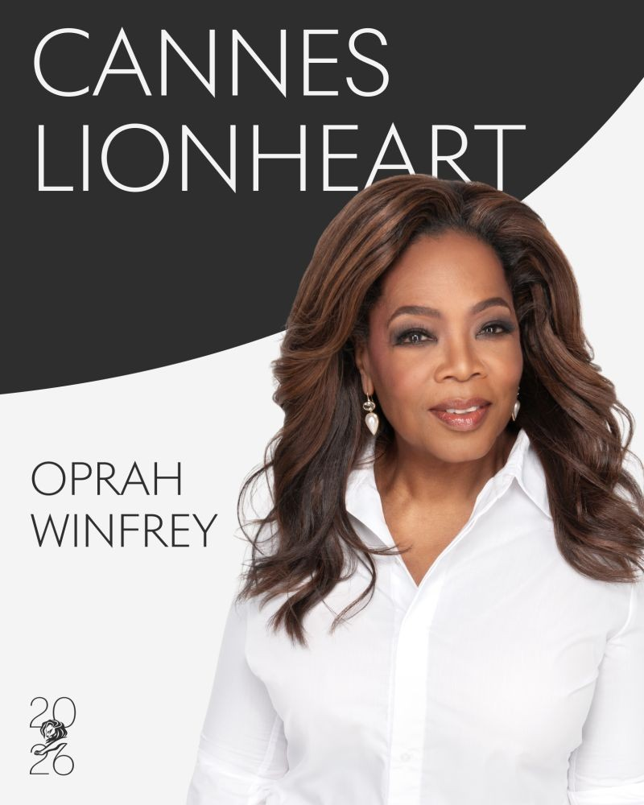
The LionHeart Award is one of Cannes Lions' highest honours. It celebrates individuals who've used their platform to drive meaningful, lasting positive change in society.
They gave it to Oprah. Obviously.
A global media leader, producer, philanthropist, actor, and author — Oprah didn't just redefine daytime television. She created an entirely new category of cultural influence that no job title has ever fully captured. Through Harpo Entertainment and The Oprah Podcast, she continues to build platforms that amplify underrepresented voices, bridge culture and impact, and combine storytelling with purpose in a way that has shaped generations.
She'll take the stage at the Lumière Theatre at 10am on Tuesday June 23 — before being presented the award at the evening's Awards Show.
If you're in that room, you'll be telling your grandchildren.
👑 Tina Knowles — Guest of the FQ Lounge
Yes. Beyoncé's mom. And so much more than that.
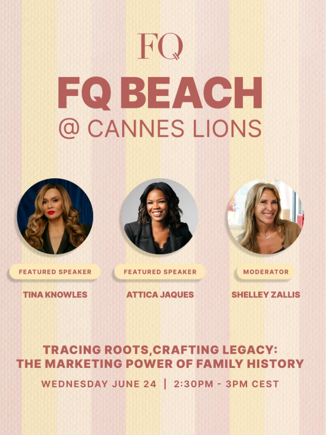
With 4.1 million Instagram followers and a life story that IS the original blueprint for generational brand building, Tina Knowles is not arriving at Cannes as anyone's plus one.
She's arriving as a cultural architect in her own right.
Her talk: "Tracing Roots, Crafting Legacy: The Marketing Power of Family History."
The woman who helped shape one of the most iconic personal brands in music history — from the wardrobe, to the aesthetic, to the values — is going to talk about how family, identity, and heritage become the most powerful marketing tools you'll ever have.
Somewhere in a boardroom, a brand strategist just knocked over their coffee.
💄 Aude Gandon — EVP, Global Chief Digital & Marketing Officer, The Estée Lauder Companies
This is what decades of global brand mastery looks like in one room.
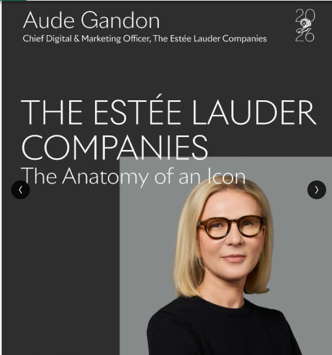
Aude Gandon doesn't just understand global marketing — she's lived it, across every major market on earth. Her track record spans some of the world's most iconic FMCG companies, with deep expertise across the US, China, India, Russia, Latin America, Southeast Asia, the Middle East, and Europe.
At Estée Lauder, she leads the digital and marketing vision for one of the most prestigious beauty portfolios in the world — driving integrated strategy across advertising, digital, social, and PR at a truly global scale.
She is the definition of what it looks like when brand-building experience meets cultural intelligence. If you're in beauty, retail, luxury, or simply want to understand how world-class marketing organisations are built — you want to be in her orbit at Cannes.
Watch: Aude Gandon — The Estée Lauder Companies at Cannes Lions 2026.
🎨 Sandra Bold — Chief Creative Officer, VML | 2026 Luxury Lions Jury
The Met Gala is over. The most luxurious event of the year is just beginning.
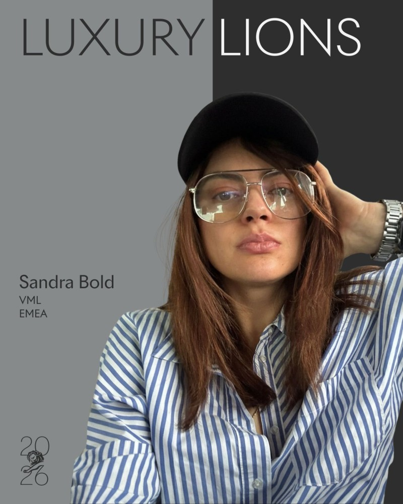
Sandra Bold has spent her career setting the creative benchmark for some of the world's most ambitious brands. As CCO at VML, she sits at the intersection of creativity, culture, and commerce — shaping work that doesn't just win awards but moves markets.
This year she joins the 2026 Luxury Lions jury, helping define what creative excellence looks like for the world's most prestigious brands.
Her own words say it best: "All my life I looked at Cannes Lions as the ultimate benchmark for the best work out there. To get invited to be part of the jury is hard to put in words without sounding over the top."
She said it anyway. We respect it completely.
🌱 Esi Eggleston Bracey — Chief Growth & Marketing Officer, Unilever
30 years. Billions of consumers. One woman leading the next generation of marketing at Unilever.
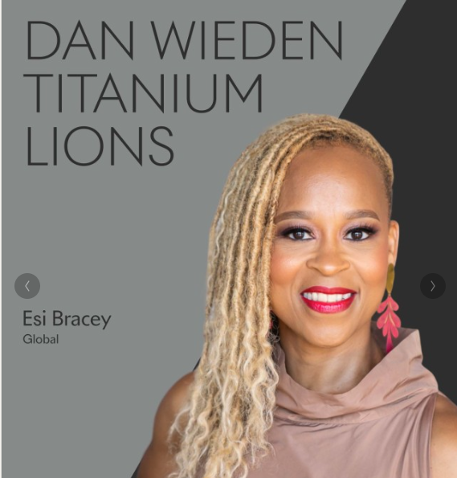
Esi Eggleston Bracey is responsible for leading Unilever into the future of marketing — and with a portfolio that includes Dove, Degree, Shea Moisture, Vaseline, and Axe, the stakes couldn't be higher.
Her career is a masterclass in navigating scale: from President of Unilever USA, to CEO of Unilever Personal Care North America overseeing a $5 billion portfolio, to President of Coty's Global Consumer Beauty Division, to SVP of Procter & Gamble's Global Cosmetics. She has consistently unlocked growth in rapidly evolving markets across consumer goods and beauty for over three decades.
If you want to understand what the next generation of marketing leadership looks like at a global FMCG — she is the case study, live and in person, at Cannes.
🌍 Woof Studios Africa — Back on the Cannes Creators Stage, June 23
Last year they made history. This year they're making it institutional.
Building on their historic debut, Woof Studios Africa is returning to Cannes Lions for a second consecutive year — and they're not coming to observe. They're coming to shift the entire global conversation.
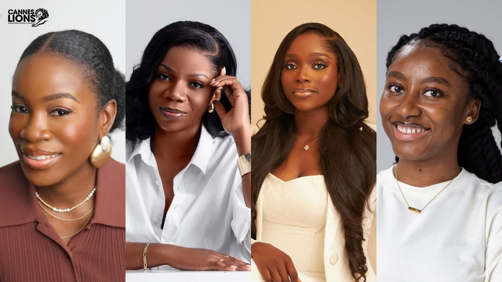
Founder and Creative Director Adetutu Laditan leads a formidable all-female West African delegation to the Palais des Festivals for a high-stakes afternoon panel: "How Africa's Creators Are Building Culture as Infrastructure."
Not going viral. Not trending. Infrastructure. Read that word again.
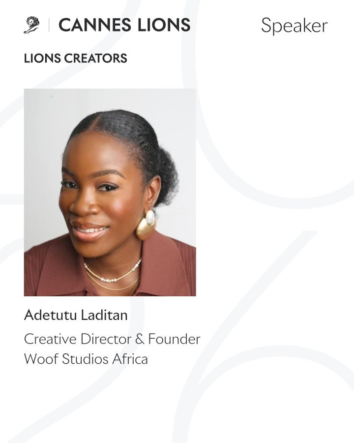
Adetutu pairs over a decade of tech-ecosystem leadership at Google — where she spearheaded YouTube's marketing and creator growth across Sub-Saharan Africa — with a proven track record of guiding Africa's biggest digital stars toward global monetisation and scale. She is a premier architect of the continent's creative landscape and one of the most important voices in the global creator economy right now.
Joining her on stage:
Tomike Adeoye (Nigeria) — Multi-hyphenate lifestyle powerhouse, premium media personality, celebrated actor, and one-half of the driving force behind Mallia World. She is redefining what premium brand integration looks like across West Africa, bringing an energy and cultural fluency that global brands are only beginning to understand.
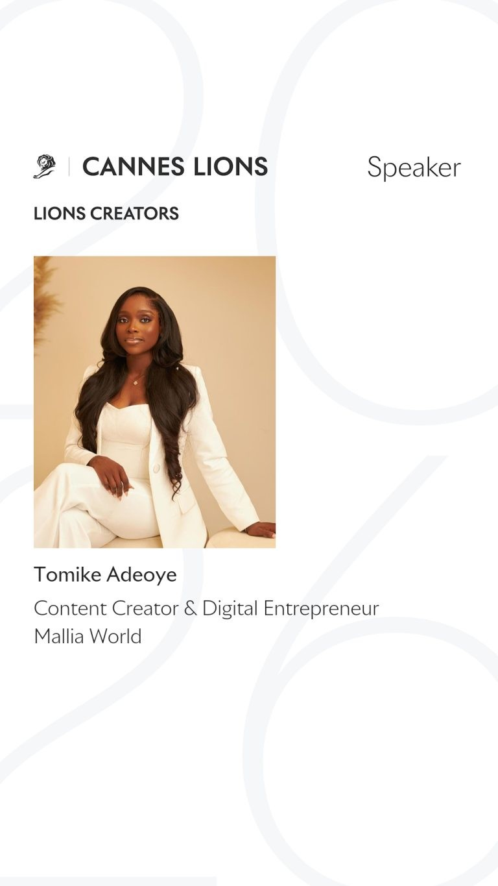
Financial Jennifer — Jennifer Awirigwe (Nigeria) — Founder and CEO of FinTribe, certified financial instructor, and pioneer of creator-led enterprise. She has built a formidable financial literacy ecosystem for women that has collectively saved $5 million. She represents what happens when creators stop making content and start building movements.
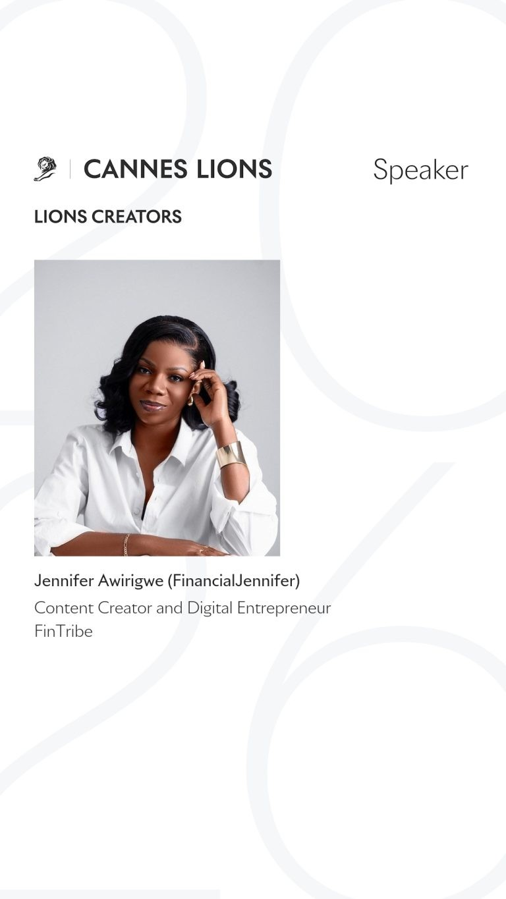
Bernice Boakye Ansah (Ghana) — Trailblazing sports content creator and digital lifestyle influencer transforming the sports media landscape by unlocking new layers of audience engagement and cross-border community building across the continent and beyond.
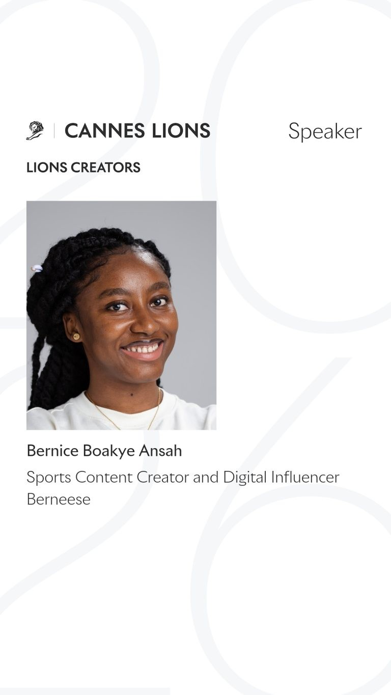
The global creative industry has been sleeping on African creators. This panel is the alarm clock.
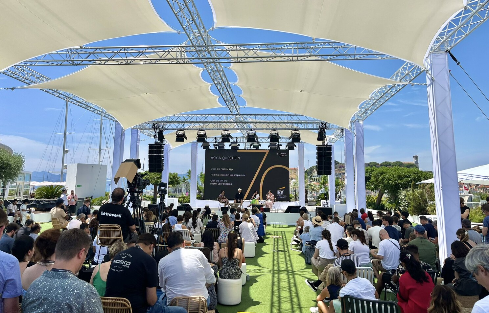
📱 Bia Granja — Official Cannes Lions 2026 Ambassador
2019: Cannes Lions juror. 2025: Viral spreadsheet maker. 2026: Official Ambassador. That arc.
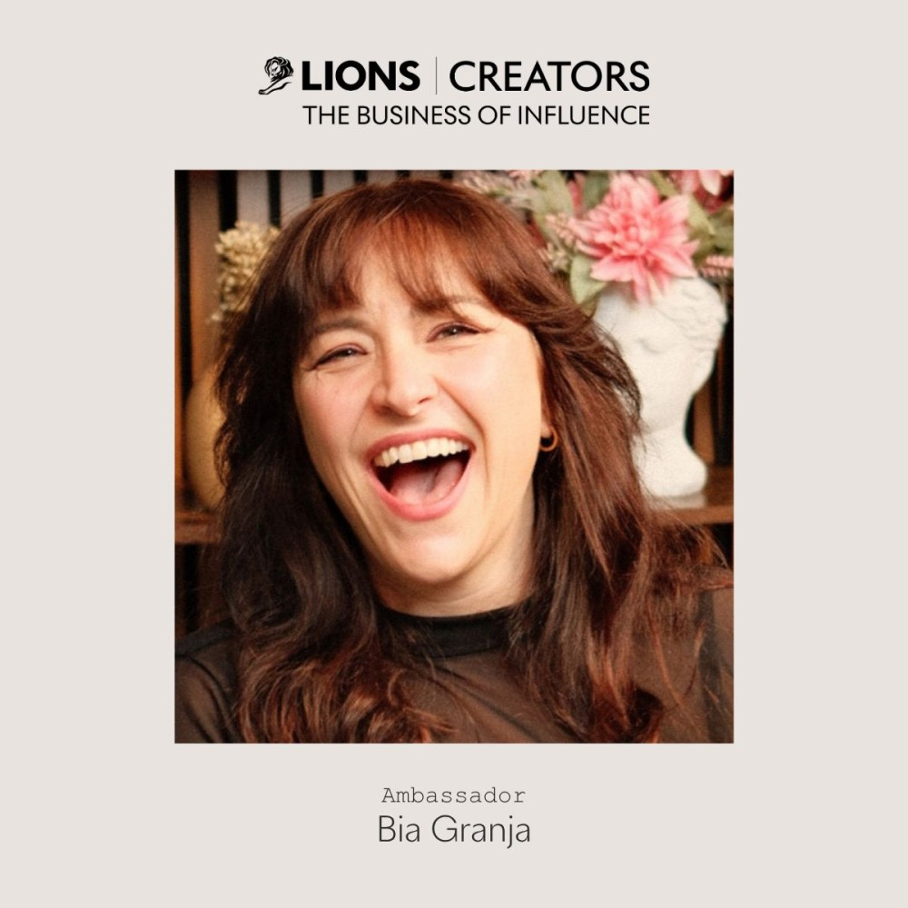
Seven years ago, Bia Granja flew to the south of France to judge the Social & Influencer Lions — only the second year the Influencer (now Creator) category existed. A chronically online person who didn't come from advertising, walking into a room full of ad people. A clash of cultures by her own admission.
She left completely obsessed.
Obsessed with designing the pathways for brands and creators to create genuinely amazing work together. And for the decade since, that's exactly what she's been doing — impacting not just her own career but the market as a whole.
Her journey from juror to viral curator to official ambassador is a case study in what happens when you show up with a point of view, do the work, and refuse to be an outsider forever.
🏃🏾♀️ Naomi Owolabi — Founder, Visual Wave | Creator | Track Athlete
Not going to Cannes representing a brand. Not going representing an agency. Going as herself.
That's the part that still catches her.
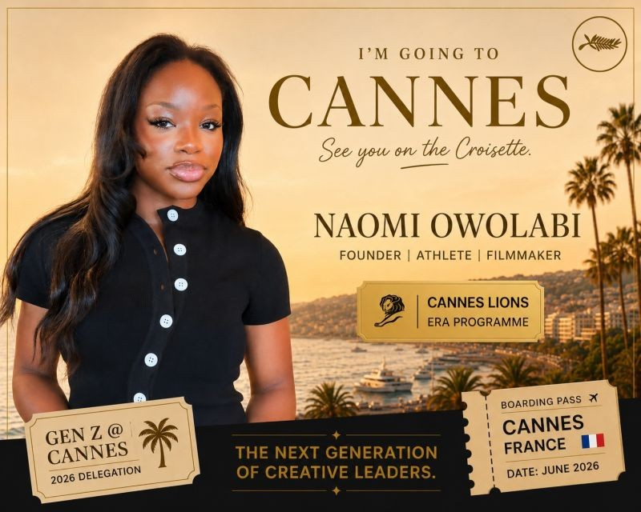
Naomi Owolabi is a track athlete in the middle of a comeback. A filmmaker. The founder of Visual Wave, where she builds documentary-style brand stories for founders and businesses. The creator of Project X — founder stories told authentically, on camera. A content creator living at the intersection of sport, film, beauty, and what it actually looks like to be a female athlete building something at the same time.
No company name to stand behind. No logo on her badge that isn't hers. Just everything she's been building — and the fact that it was enough to get her in the room.
She earned her seat at the world's most influential creative festival by creating. Full stop.
⚖️ Stephanie J — From Law Graduate to Cannes
No industry network. No marketing degree. No clue what she was doing. Just someone who started talking about marketing on the internet.
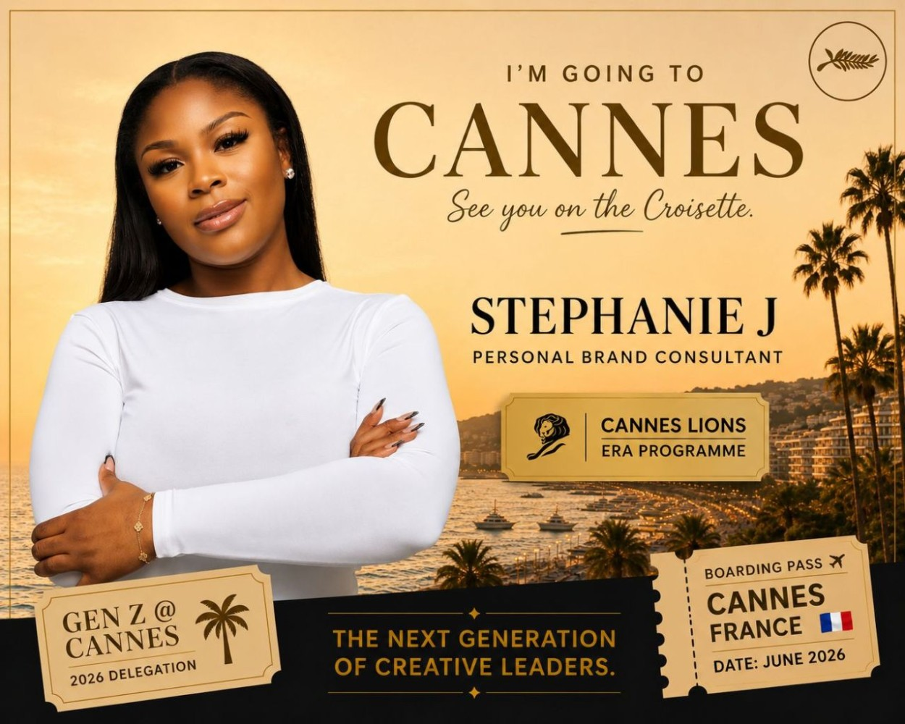
That's it. That's the whole story. And it's the most powerful one here.
What started as a way to build visibility became a portfolio. A network. A business. A platform. Opportunities she never thought she'd have access to.
And now it's taking her to Cannes Lions.
She said it simply: "We often underestimate the power of visibility."
That's the whole masterclass right there. No ticket required.
🌍 Delphine Ingabire — Founder, IGIRE Foundation | International Business Management Professional
From Davos to Cannes. The rooms keep getting bigger.
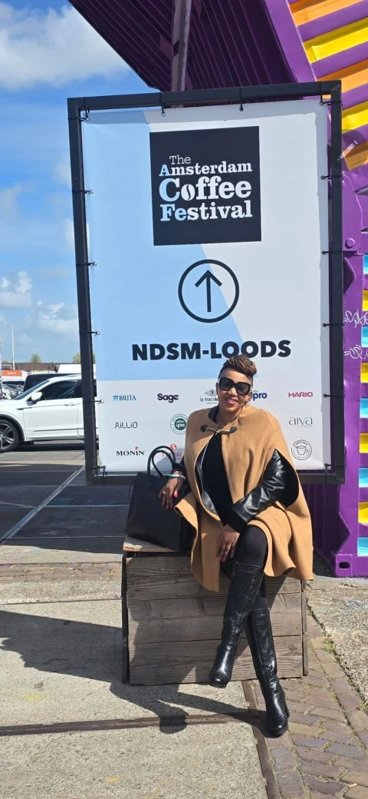
As a Dutch-Rwandese entrepreneur, bridging Europe and East Africa isn't just what Delphine Ingabire does — it's who she is. A humanitarian, business connector, and founder whose work spans continents and communities, she has built her presence in the world's most important rooms through consistency, credibility, and an unshakeable sense of purpose.
Fresh from the Amsterdam Coffee Festival and carrying the momentum of her World Economic Forum connections from Davos, she arrives at Cannes as living proof that the most powerful network is the one you build across borders — not just across industries.
And if you need proof that Cannes Lions changes what's possible — look at what the festival celebrated last year.
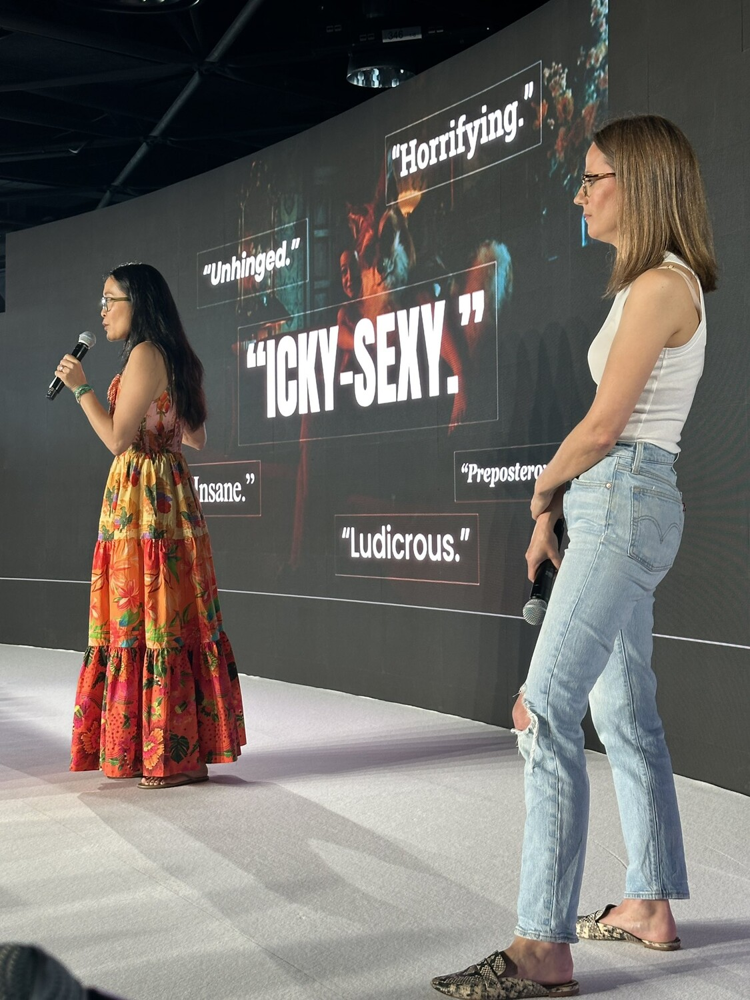
A campaign that made New Zealand the best place in the world to have herpes won the Grand Prix for Good. They used national pride to eliminate stigma. It was brave, outrageously creative, wildly ambitious, and educational — in the jury's own words. You genuinely cannot make this up, and you genuinely could not have predicted it would work. It did.
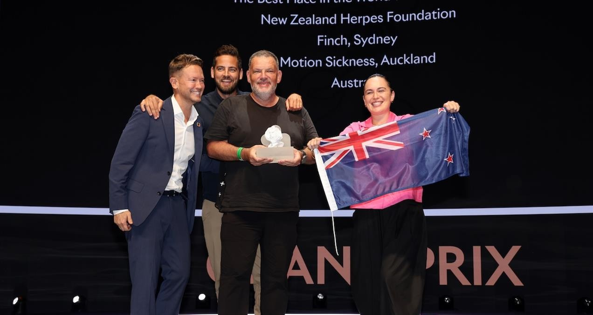
An initiative called Amazon Greenventory won the SDG Lions Grand Prix by proving that sustainable profit in the Amazon doesn't require deforestation. The jury said it best: "Good work informs. Great work transforms."
And Dove's Real Beauty campaign — a soap brand that changed how women see themselves across an entire generation — won the Grand Prix in Glass: The Lion for Change. Not just a campaign. A cultural shift with measurable, lasting impact.
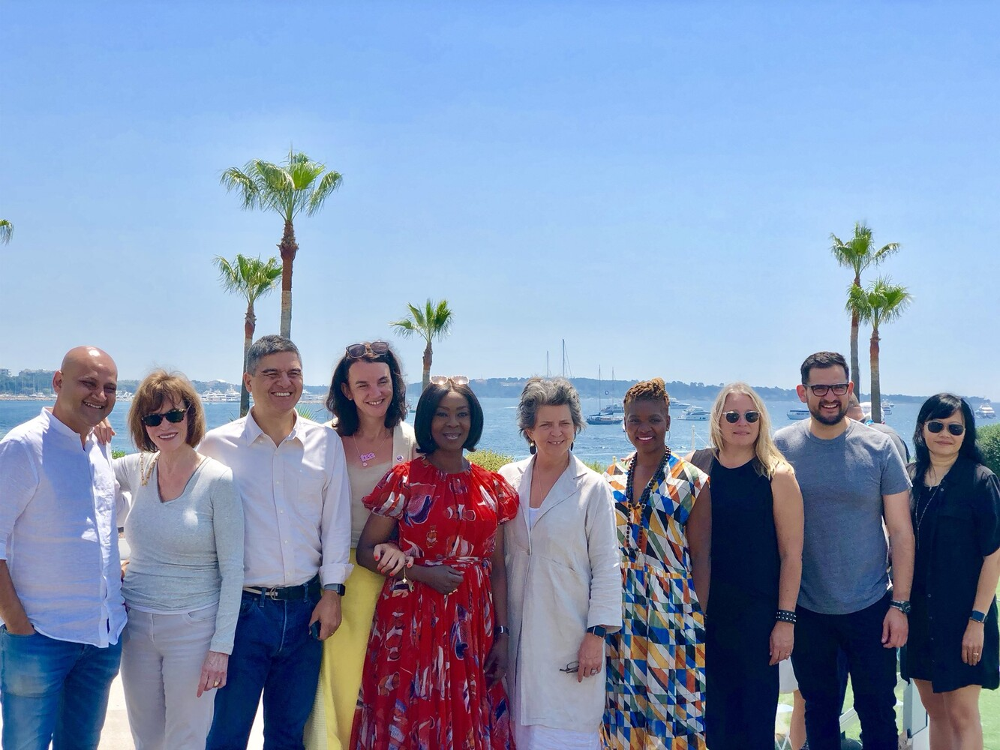
That is the standard. That is what gets celebrated in that room.
That is why you need to be there.
The Lionesses Are Ready. Are You?
Here's the truth about Cannes Lions that nobody says out loud:
The festival isn't about the trophies. It's about the conversations that happen in the hallways, the lounges, the dinner tables, and the panels that don't make the main schedule.
It's where deals get made. Ideas get funded. Careers get changed. Partnerships get born.
And this year, the women are not waiting to be invited into those conversations.
They are having them.
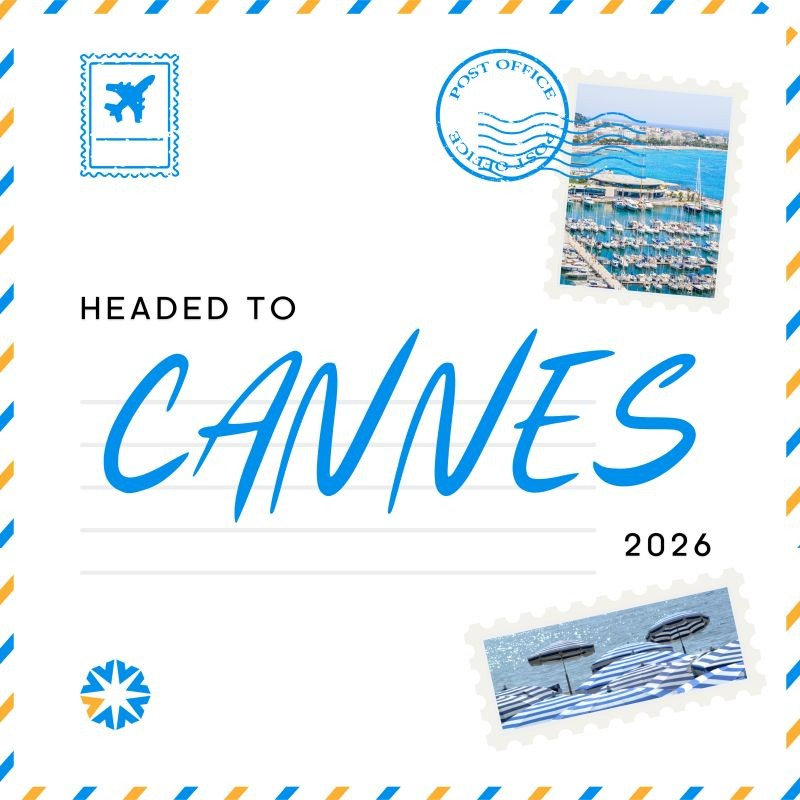
Are you going to Cannes Lions 2026?
Drop a 🦁 in the comments if you'll be there. Tag someone who belongs in that room. And if you're still on the fence — consider this your sign.
June 22–26. Cannes, France. The lionesses are ready.
#CannesLions #CannesLions2026 #WomenInMarketing #CreativeIndustry #LionHeart #Advertising #BrandBuilding #AfricanCreatives #ContentCreators #MarketingLeadership #Creativity #FutureOfMarketing
Disclaimer: The photos and video used in this article are not owned by the author. They have been sourced from publicly available platforms across the internet for illustrative and editorial purposes only. All rights and credits belong to the original creators or copyright holders. If any image infringes on your copyright, please contact the author for prompt removal or proper attribution.
Related: Read Cannes Lions Is a $3 Billion Networking Failure — Here's the Data for the hard numbers behind the festival's $3 billion economy and why the follow-up system is broken.